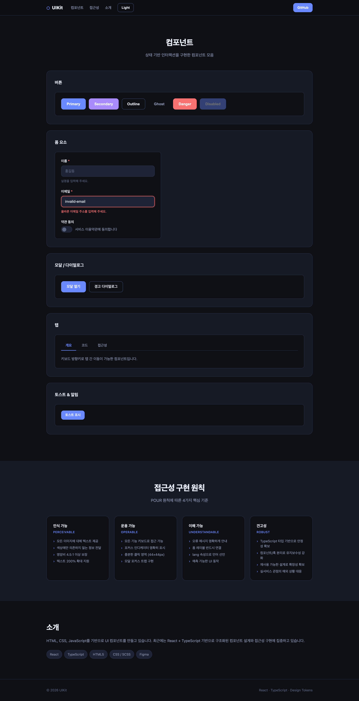
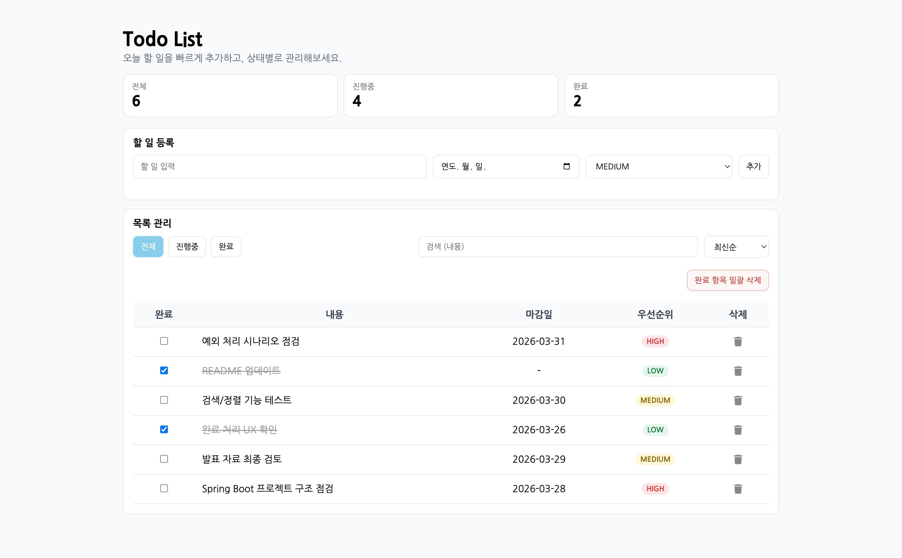

기술/AI · 2026. 3. 27. 13:55
[AI 개념 정리] RAG (검색 증강 생성)
[AI 개념 정리] RAG (검색 증강 생성) 작성일: 2026-03-27 · AI 시스템 개념 노트. LLM은 학습 데이터 기준으로만 답변한다. 즉, 학습 이후에 생긴 정보나 내부 문서는 알 수 없다. 이 한계를 극복하는 대표적인 기법이 RAG(Retrieval-Augmented Generation)다...
코드로 사용자 경험을 설계하는 웹 개발자입니다.
반응형 디자인과 웹 표준을 기반으로 성능 최적화된 인터페이스를 구현합니다.
최신 기술 스택을 학습하며 확장 가능한 웹 솔루션을 개발하고 있습니다.
a.k.a, yoon
즐기면 더 잘한다는 마음으로 웹 개발을 하고 있습니다.
HTML, CSS, JavaScript로 웹 페이지를 만들고, React/Next.js로 컴포넌트 기반 개발을 하고 있어요. Spring Boot로 백엔드도 만들 수 있고, Git으로 형상관리도 합니다.
Linux 서버에 webApp배포도 할 수 있고, 클라우드 인프라 구축도 조금씩 배우고 있어요. 아직 배워야 할 게 많지만, 꾸준히 공부하면서 실력이 늘어가는 걸 느끼고 있어요.



접근성을 고려한 UI 컴포넌트 라이브러리 데모 프로젝트입니다. 버튼, 폼, 탭, 모달, 토스트 등 재사용 가능한 컴포넌트를 정리했습니다.
ARIA 패턴과 키보드 내비게이션을 적용한 재사용 컴포넌트 설계

스타벅스 공식 웹사이트를 HTML, CSS, JavaScript로 클론 코딩한 프로젝트입니다. 인터랙티브한 UI를 구현했습니다.
반응형 레이아웃과 UI 디테일 재현에 집중한 클론 프로젝트

웹에이전시 근무 중 퍼블리싱 작업을 맡았습니다.
운영 환경 기준으로 크로스브라우징과 마크업 품질을 유지

웹에이전시 근무 중 퍼블리싱 작업을 맡았습니다.
협업 일정에 맞춘 퍼블리싱 산출물 제작 및 유지보수 진행

Spring Boot와 JdbcTemplate, H2 인메모리 DB를 사용한 CRUD 기능이 구현된 할일 관리 웹 애플리케이션입니다.
백엔드 기본 아키텍처와 데이터 흐름을 실전 형태로 구현
설명
Blog
코드와 디자인 사이에서 배운 인사이트를 짧고 명확하게 기록하고 있어요.
실무에서 바로 써먹을 수 있는 팁부터 시행착오까지 솔직하게 담아냅니다.
기술/AI · 2026. 3. 27. 13:55
[AI 개념 정리] RAG (검색 증강 생성) 작성일: 2026-03-27 · AI 시스템 개념 노트. LLM은 학습 데이터 기준으로만 답변한다. 즉, 학습 이후에 생긴 정보나 내부 문서는 알 수 없다. 이 한계를 극복하는 대표적인 기법이 RAG(Retrieval-Augmented Generation)다...
기술/AI · 2026. 3. 27. 13:23
[AI 개념 정리] 싱글 에이전트 vs 멀티 에이전트 작성일: 2026-03-27 · AI 에이전트 시스템 개념 노트. LLM을 단순 텍스트 생성 도구가 아닌 스스로 판단하고 행동하는 주체로 사용하는 것이 핵심이다. 싱글 에이전트와 멀티 에이전트를 비교해 정리했다...
자격증 공부/ADsP · 2026. 3. 26. 16:25
[ADsP 공부기록] 1장 데이터와 정보 정리 작성일: 2026-03-26 · 데이터분석 준전문가(ADsP) 공부 노트. 오늘은 ADsP 이론의 시작인 데이터와 정보 파트를 정리했다...
언어/JavaScript · 2025. 11. 5. 09:11
이벤트(Event) 사용자와 웹페이지가 상호작용하는 방법 1. 이벤트란? 이벤트(Event)는 사용자의 행동(클릭, 입력, 스크롤 등)에 반응하여 특정 코드가 실행되도록 하는 동작입니다...
언어/JavaScript · 2025. 11. 5. 09:02
DOM(Document Object Model) HTML 요소를 JavaScript로 조작하는 방법 1. DOM이란? DOM(Document Object Model)은 HTML 문서를 객체 형태로 표현한 모델입니다...
언어/JavaScript · 2025. 11. 4. 09:47
스코프(scope)와 호이스팅(hoisting) 변수의 유효 범위와 선언 위치에 따른 동작 이해하기 1. 스코프(scope)란? 스코프(Scope)는 변수가 접근할 수 있는 범위를 말합니다...
언어/JavaScript · 2025. 11. 3. 13:25
함수(Function) 코드를 재사용하고 구조화하는 핵심 개념 1. 함수란? 함수(Function)는 특정 작업을 수행하기 위한 코드의 묶음입니다. 한 번 정의하면 여러 번 호출할 수 있어 코드 재사용이 가능합니다...
언어/JavaScript · 2025. 11. 3. 09:54
조건문과 반복문은 코드의 흐름을 제어하는 핵심 문법 1. 조건문(Conditional Statements) 조건문은 "조건에 따라 코드의 실행을 제어"할 때 사용합니다...
언어/JavaScript · 2025. 11. 3. 09:46
연산자(Operators) 값과 값을 계산하거나 비교할 때 사용하는 기호 1. 연산자란? 연산자(Operator)는 값(피연산자)를 가지고 계산을 수행하는 기호입니다...
언어/JavaScript · 2025. 10. 30. 15:22
데이터 타입(Data Type) JavaScript에서 다루는 값의 종류와 특징 1. 데이터 타입이란? 변수에 저장되는 값의 종류를 의미하며 숫자, 문자, 불리언, null, undefined 등이 있습니다...
언어/JavaScript · 2025. 10. 30. 14:01
변수와 상수는 프로그램에서 데이터를 저장하고 관리하는 기본 단위 1. 변수란? 변수는 데이터를 임시로 저장하는 공간이며 실행 중 값이 바뀔 수 있습니다...